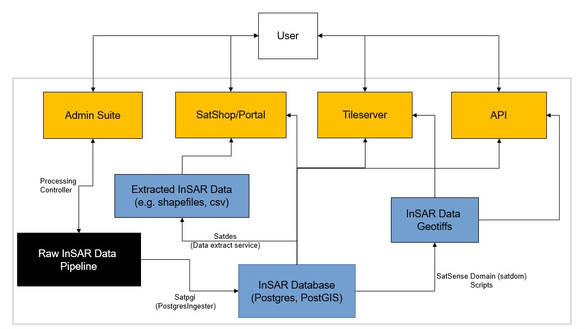

SatSense Client-Facing Applications Overview
The purpose of this section is to document the set up and usage of the SatSense client-facing application ecosystem. The following diagram illustrates this ecosystem:

An editable version of this diagram is kept on sharepoint. We now explain this diagram in some detail; we run through each section of this diagram in the order that the data follows; from creation to delivery.
Raw InSAR Data Pipeline (a black box)
SatSense's processing pipeline (labelled as "Raw InSAR Data Pipeline") is intentionally represented as a black box. It's not too important to know the details about this pipeline, but the unenlightened and interested reader can find more details here. The really important takeaways are:
- This is where the magic starts (i.e. this is where SatSense data is created);
- The output is a bunch of hdf5 files, and the postgres ingester accepts these as an input;
- A subset of the admin suite (known as the "Processing Controller") helps monitor this pipeline, and the intention is for the admin suite to eventually control this pipeline.
Satpgi (PostgresIngester)
The soul responsibility of this set of python scripts is to get the output of the processing pipeline into a format that is easily queryable by applications. These scripts take in a set of hdf5 files as input and outputs a load of that data into the InSAR Database. The repository is kept here and more information on this project can be found here.
InSAR Database
This is a very large PostGIS enabled PostgreSQL database. For this database, we use a schema migration tool called alembic, the migrations are stored here. See here for more information.
Satdes (Data Extract Service)
This project houses a load of python scripts that take data from the InSAR Database and extracts them into files (e.g. csv, shapefile, geojson). These files can provide a friendly format to send to clients or for local analysis. SatShop utilises satdes in order to honour its orders (although, it is currently a manual process). More information here.
SatSense Domain (satdom) Scripts
These are python scripts that live in the satdom project. Satdom is a centralised library of code that is utilised by a number of other projects, more information in the satdom project README. The purpose of these scripts is to provide a repeatable and testable way to extract large amounts of InSAR data into files (generally geotiffs).
The reader is probably confused why these scripts do not exist in satdes (and rightfully so). The distinction is as follows. Satdes is a tool that is accessible to the majority of the SatSense team and allows extraction of a geographic subset of InSAR data. In contrast, the satdom scripts are tools used to generate derived or cached data assets that are served by applications (e.g. srisk geotiffs for the API, or velocity tiles for the portal). More information is here.
API
A very lightweight project that serves SatSense data. Using flask-restful, the project is essentially just a wrapper around code that exists in the satdom. The main end points expect a small posted polygon and in return will serve a traffic light (green, amber, red). This traffic light indicates how much movement SatSense data detects within the polygon using various derived products. These derived products can be quite time-consuming to calculate, so we have opted to cache them in a big geotiff (an output of a satdom script). More information here.
SatShop/Portal (satportal)
A web GIS application built using flask, angular js, and leaflet. It allows a user to browse SatSense data, or to order SatSense data to download and analyse locally. The web interface connects directly connects to the InSAR Database allowing queries of point time series. It also hooks into the Tileserver. A lot of the satportal code wraps functions in satdom - you can read more about the project here.
Tileserver
The main purpose of this project is to render tiles for web portal part of satportal. Having said that, it is possible to utilise the tileserver from other clients (e.g. QGIS). When asking for tiles at a high enough zoom level (higher means more zoomed in), then the tileserver will render velocities for individual points. However, for lower zoom levels, it's not possible for the tileserver to render all points for a tile nor is it possible for the tileserver to render aggregated velocities - in either case, there are just too many points. Instead, we cache aggregated results in a geotiff (output of a satdom script), and use these geotiffs to display tiles at these lower zoom levels.
Tileserver repository is here and more information is here.
Admin suite
The diagram at the top details the journey of SatSense InSAR data. But it misses out how we control access to all of these assets. All of the applications (boxes in yellow) hook into a PostgreSQL database that contains user information - it was clunky to represent this on the diagram but also easy to describe in words. The admin suite controls access to the applications (including itself). Additionally, as we've already mentioned, a subset of admin suite also helps monitor the processing pipeline. Repository is here and more information is here.